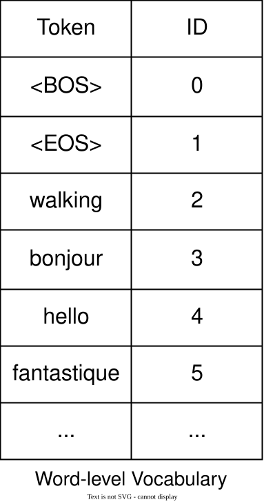
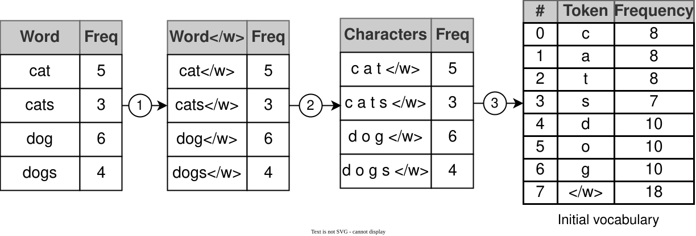
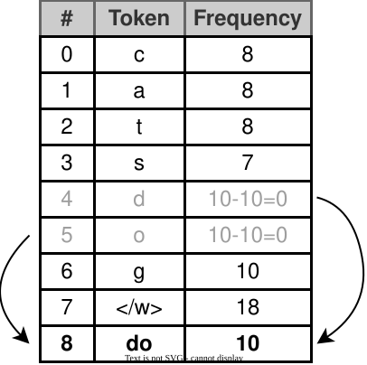
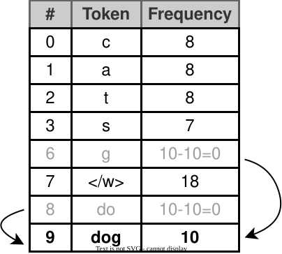
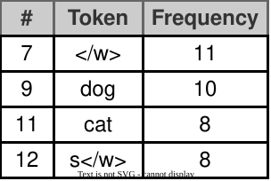
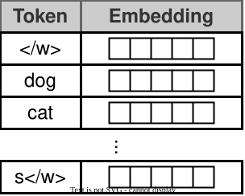
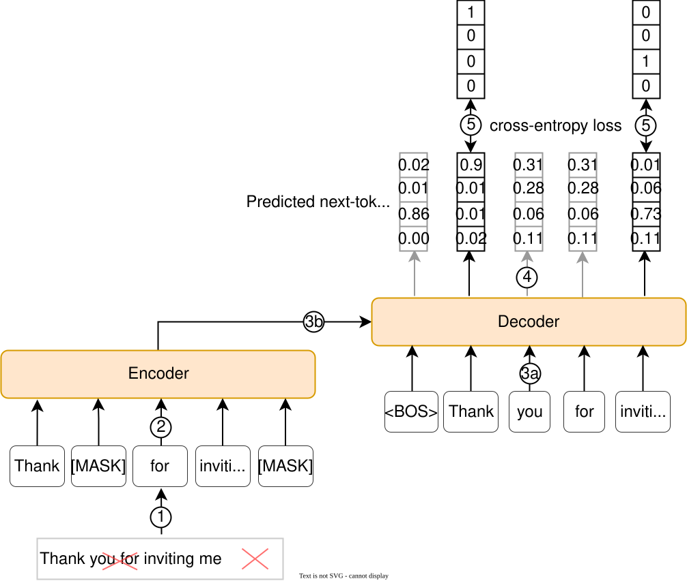
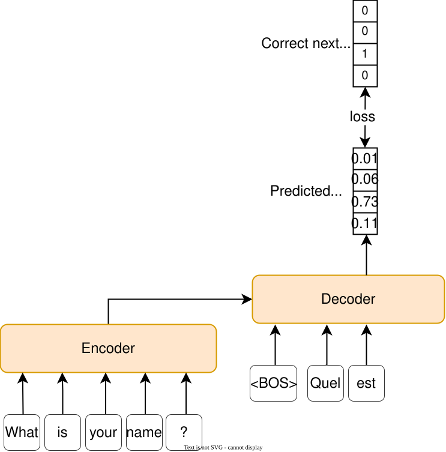
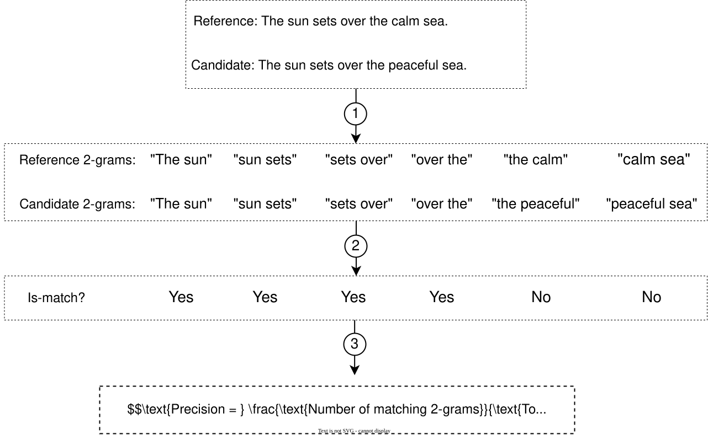

Google Translate
Introduction
Google Translate is a widely used language translation service offered by Google. The service relies on machine learning (ML) models to understand and translate text between languages. As of 2024, the service supports over 130 different languages and has over a billion users [1]. This chapter explores the system design behind a language translation service.
![Image represents a user interface showcasing a language detection and translation feature. Two rectangular boxes are displayed side-by-side. The left box shows a text input area containing the English phrase 'Beautiful day!' along with a microphone icon suggesting voice input capability. Above this box, a dropdown menu labeled 'Detect lang...' displays 'English' as the selected option with 'Spanish' also available. A counter '14/5,...' is visible at the bottom, possibly indicating progress or a character limit. The right box displays the Korean translation '아름다운 날!' Above this box, a similar dropdown menu labeled 'Korean' shows 'Spanish' and 'Russian' as additional options. At the bottom of the right box, a button labeled 'Send Feedb.' suggests a feedback submission mechanism. There is no explicit visual connection between the boxes, but the implied interaction is that the input text in the left box is translated into the selected language in the right box.](images/genai-ch03-google-translate-img-de7b5a80.svg)
Clarifying Requirements
Here is a typical interaction between a candidate and an interviewer:
Candidate: Are there specific languages the system should support initially?
Interviewer: Let's focus on four languages: English, Spanish, Korean, and French. We can expand to more languages in the future.
Candidate: Considering the diversity of languages, do we have access to a sufficiently large and varied dataset for training?
Interviewer: Yes. We have access to a substantial multilingual corpus, including formal documents, web content, and conversational texts, in all four languages. The dataset contains 300 million examples, an example being defined as a pair of sentences in the source and target languages.
Candidate: Do we have access to general text data? This is important, as it would allow us to pretrain a model on general text data and, thus, allow it to gain general knowledge.
Interviewer: Assume we have access to terabytes of general text data in each of the languages, obtained from various sources.
Candidate: Will users specify the input text language, or should the system detect it automatically?
Interviewer: Users cannot always identify a text’s language. Imagine a book title in a language with which the user is not familiar. Our system should detect the input language automatically.
Candidate: Is there a constraint on the length of the input text?
Interviewer: Let’s build the system in such a way that it can support inputs of up to 1,000 words.
Candidate: Should the system support translation when there is no internet connection? In other words, should the model work on-device?
Interviewer: The focus of this interview is not efficiency and model optimization for on-device deployment. Let’s assume an internet connection is required and that the model will be deployed on the cloud.
Candidate: Should the system support real-time translation?
Interviewer: Not initially.
Frame the Problem as an ML Task
In this section, we frame the problem of building a translation system as an ML task. This involves understanding the system’s inputs and outputs and choosing a suitable ML approach.
Specifying the system’s input and output
The input to a translation system is a sequence of words in the source language and the target language provided by the user. The output is a sequence of words in the target language.
![Image represents a simplified model of a machine translation system. The input, labeled 'Source s...', feeds the phrase 'A beautiful day' into a central rectangular box labeled 'Language Translation...'. A second input, labeled 'Desired language', provides the target language, 'Spanish'. Both inputs are connected to the 'Language Translation...' box, indicating that both the source text and target language are necessary for the translation process. The 'Language Translation...' box processes the input and outputs the translated phrase 'Un día hermoso', labeled 'Translated sentence...'. The arrows indicate the flow of information, showing how the source sentence is transformed into the target language based on the specified desired language.](images/genai-ch03-google-translate-img-179f6e0b.svg)
Choosing a suitable ML approach
In language translation, a sequence of words in one language is transformed into a sequence of words in another language. This sequence-to-sequence (seq2seq) structure is also found in other tasks, such as text summarization and speech recognition.
Seq2seq models, a class of ML models, are specifically designed to handle such tasks. These models transform an input sequence into an output sequence, which can vary in length from the input. Seq2seq models follow an encoder-decoder architecture, which has two main components:
- Encoder: Processes the input sequence and transforms it into a sequence of context vectors, thus encoding the information in the input sequence.
- Decoder: Utilizes the encoder’s context vectors to generate the output sequence one token at a time.
![Image represents a simplified diagram of a neural machine translation (NMT) system. The system consists of two main components: an Encoder (represented by a light green rectangle labeled 'Encoder') and a Decoder (represented by a light orange rectangle labeled 'Decoder'). An arrow indicates that the Encoder's output feeds directly into the Decoder. The Encoder receives as input the English phrase 'I am graduating' (enclosed in a dashed-line box labeled 'English:'), processing it to create an internal representation. This representation is then passed to the Decoder. The Decoder generates the Spanish translation 'me estoy graduando' (enclosed in a dashed-line box labeled 'Spanish:'), which is shown as an output arrow pointing upwards from the Decoder. The entire diagram illustrates the flow of information from English input through the Encoder and Decoder to produce a Spanish output, demonstrating a basic sequence-to-sequence model for machine translation.](images/genai-ch03-google-translate-img-775f2891.svg)
There are several architectures available for the encoder and decoder components. In particular, architectures designed to process sequential data, such as LSTMs, GRUs, and Transformers, can be employed. Among those, Transformers have shown superior performance in translation tasks, outperforming earlier models such as GRUs and LSTMs, particularly in handling long-range dependencies. Notably, the attention mechanism was originally introduced in the context of language translation [2].
As described in Chapter 2, Transformers have three variations: encoder-only, decoder-only, and encoder-decoder architecture. Encoder-only models such as BERT [3] are good at understanding and processing the input sequence but typically require additional mechanisms to generate output. Decoder-only models, such as OpenAI’s GPT [4] and Anthropic’s Claude [5], are highly effective at generative tasks.
While all three architectures offer strong performance and can be adapted for language translation tasks through techniques like prompt engineering, encoder-decoder models are usually preferred for three main reasons. First, the encoder-decoder architecture separates the input understanding and output generation, which is ideal for seq2seq tasks such as language translation. It allows the encoder to specialize in the source language and fully understand the input sequence before the decoder generates the output. For example, encoders often use bidirectional mechanisms, such as bidirectional LSTMs [6] or Transformers, which enable them to understand the context from both directions.
Second, this architecture naturally handles variable-length sequences. Encoder-decoder models are designed to accommodate input/output sequences of varying lengths, making them highly versatile across different applications. This flexibility is crucial for tasks where inputs and outputs do not have a fixed length relationship.
Finally, the cross-attention mechanism present in encoder-decoder Transformers enables the decoder to focus dynamically on relevant parts of the input sequence during generation. This targeted attention ensures that the output sequence remains closely aligned with important elements of the source sequence, thus improving the accuracy and quality of the translation. We will explore cross-attention in greater detail in the architecture section.
Data Preparation
In this section, we prepare raw textual data for the encoder-decoder Transformer. We have two types of data for training: general data and translation data. General data includes publicly available text from the Internet. Translation data comprises 300 million sentence pairs, each containing a source-language sentence and its corresponding translation in the target language.
Raw text in both general data and translation data is often noisy and not in the format the ML model expects. Since we covered preparing general data in Chapter 2, we will focus on preparing translation data. In particular, we focus on the following two steps:
- Text preprocessing
- Text tokenization
Text preprocessing
We apply the following preprocessing techniques to raw text in translation data:
- Remove missing data: Remove pairs where either the source or target text is missing.
- Remove noisy data: Remove pairs with HTML tags or incorrect language pairings.
- Deduplication: Remove duplicate sentence pairs from the dataset to prevent the model from overfitting to certain examples.
- Handle named entities: Language translation models often struggle with named entities. We identify these entities in the text and replace them with placeholder tokens. After translation, we replace the tokens with the original entities. For example, consider the sentence: "The California city, Burlingame, is named after diplomat Anson Burlingame." First, we detect the named entities: "California (location name),” “Burlingame (location name)," and "Anson Burlingame (person’s name)." Next, we replace these entities with placeholder tokens: "The ENTITY_1 city, ENTITY_2, is named after diplomat ENTITY_3." This approach helps the model focus on the sentence context during training without being confused by uncommon terms.
In modern language translation, particularly with models like Transformers, some traditional preprocessing steps have become less crucial or are handled differently. Here are a few preprocessing steps that were once essential in traditional translation models but are now unnecessary or less relevant:
- Lowercasing: Modern language translation models can handle case sensitivity as part of their training. They can learn to distinguish between different forms of words based on case (e.g., “Apple” as a company vs. “apple” as a fruit) without needing to convert everything to lowercase. Therefore, lowercasing is often skipped to preserve the original case information.
- Stop word removal: Stop words (e.g., “the,” “and,” “in”) are essential for the grammatical structure of sentences. Removing them can disrupt the fluency and meaning of translations. Modern language translation models benefit from having complete sentences, including stop words, to understand the context fully and produce more natural translations.
- Stemming and lemmatization: Stemming (reducing words to their base or root forms) and lemmatization (reducing words to their dictionary forms) are not typically needed in modern language translation because these models are designed to handle morphological variations of words. The models learn to translate words into their correct forms based on context; therefore, reducing them to a base form could actually remove valuable information.
- Punctuation removal: Punctuation is important for understanding sentence structure and meaning. Modern language translation models are trained to handle punctuation naturally; thus, removing it can degrade translation quality. Punctuation is usually preserved to help the model maintain the grammatical integrity of sentences.
Text tokenization
In the context of language translation in which we deal with several languages, the choice of text tokenization algorithm is important. For example, if we were to choose a word-level tokenizer, we would have hundreds of thousands of unique words across all languages in our vocabulary, which is huge and inefficient.

' (Begin of Sentence) and 'In language translation, handling the diversity of words across languages is a key challenge. Traditional word-level tokenization models often struggle with out-of-vocabulary (OOV) words, while subword-level tokenization algorithms are more efficient and can effectively address the OOV problem. Due to their importance and widespread use, it is valuable to examine Byte-Pair Encoding (BPE) [7], a commonly used subword-level tokenization algorithm, in detail.
Byte-Pair Encoding (BPE)
BPE builds a subword-level vocabulary through iterative merging. It starts with characters and iteratively merges the most frequent combinations into new subwords. This allows the model to break down words, even rare or unseen ones, into known components, thus enabling accurate understanding and translation. Let’s walk through a concrete example to better understand BPE.
Initial setup
Suppose we have a corpus with the following set of words: “cat,” “cats,” “dog,” and “dogs.”
![Image represents a data processing pipeline where a corpus (represented as a beige cylindrical database) is processed to generate a word frequency table. A unidirectional arrow indicates data flow from the 'Corpus' database to a table with two columns: 'Word' and 'Frequency'. The 'Word' column lists individual words ('cat', 'cats', 'dog', 'dogs'), while the 'Frequency' column shows the corresponding count of each word's occurrences within the corpus. The table visually presents the results of analyzing the text data contained within the corpus, summarizing the frequency of each word.](images/genai-ch03-google-translate-img-474211e6.svg)
In the initial setup, our goal is to initialize a vocabulary consisting of different characters and their frequency of occurrence in the corpus. To achieve this, we follow these steps:
- Add a special end token, “,” to the end of each word to mark its boundary. This special token helps the model know when a word has ended.
- Tokenize the corpus by breaking down each word into individual characters.
- Initialize the vocabulary with individual characters and their frequency of occurrence.

' (e.g., 'cat'), indicating a word token, and frequencies remain the same. A second numbered arrow (2) connects this table to a third table, which lists the character sequences of each word-token (e.g., 'cat') and their frequencies. Finally, a third numbered arrow (3) connects the character sequence table to a final table labeled 'Initial vocabulary,' which shows each unique character ('c,' 'a,' 't,' 's,' 'd,' 'o,' 'g,' '') and its overall frequency across all word-tokens. The frequencies in the final table represent the total count of each character in the initial word list."/>Iterative merging
Once the initial vocabulary has been created, BPE iteratively merges the most frequent character pairs into subwords. This continues until the vocabulary reaches a predefined size or meets the stopping criteria.
Following are the first five BPE iterations:
-
Iteration 1: We first identify the most frequent character pair, which is "d" and "o," appearing together 10 times (in "dog" and "dogs"). We merge them to create a new token, "do." Although "og" also appears 10 times, "do" comes first alphabetically. The token "do" is added to the vocabulary, and the frequency counts are updated. "do" now occurs 10 times, and the individual counts of "d" and "o" are reduced accordingly.

' with a frequency of 18. Row 8 shows 'do' with a frequency of 10. Two curved arrows outside the table indicate a cyclical or iterative process, suggesting the data might be used in a loop or repeated calculation. The table's structure and the arrows imply a process where token frequencies are calculated and potentially reused within a system, possibly related to text processing or natural language processing."/>Figure 7: BPE iteration 1 -
Iteration 2: Now we look for the next most frequent pair, which is “do” and “g” (also from “dog” and “dogs”). These characters appear together 10 times, so we merge them to create the token “dog.”

' with a frequency of 18. Row 8 shows 'do' with a frequency calculated as '10-10=0'. Finally, row 9 shows the token 'dog' with a frequency of 10. Two curved arrows indicate a cyclical or iterative process, suggesting the data might be processed repeatedly or represent a sequence of steps. The table likely represents a step in a natural language processing or text analysis process, possibly related to tokenization and frequency counting before further processing."/>- Iteration 3: Moving forward, we notice that “c” and “a” (from “cat” and “cats”) appear together 8 times. We merge these to create the token “ca.” After merging, “cat” can be represented as “ca” and “t.” The token “ca” now has a frequency of 8.
- Iteration 4: We continue by merging “ca” and “t”, which appear 8 times together (from “cat” and “cats”). We merge them to form the token “cat.” Now, “cats” can be represented as “cat” and “s”, and “dogs” as “dog” and “s.” The frequency count for “cat” is updated to 8.
- Iteration 5: Finally, the next most frequent pairing is “s” and “” (from “dogs” and “cats”), which appears 7 times. We merge “s” and “” to form the token “s.”
![Image represents a step-by-step process of updating token frequencies. Three tables are shown, each with columns '#' (representing a token ID), 'Token', and 'Frequency'. The first table shows initial frequencies; for example, token 0 ('c') has a frequency of 8-8=0, token 1 ('a') has 8-8=0, token 2 ('t') has 8, and so on. A rightward arrow indicates a transformation where the frequency of token 3 ('s') is reduced by 7, resulting in the second table. This table shows updated frequencies, where 's' now has a frequency of 0, and '</w>' has 18-7=11. Another rightward arrow shows a further transformation, likely another frequency update, resulting in the third table. This final table shows further adjustments; for instance, '</w>' now has a frequency of 8, and a new token 's</w>' appears with a frequency of 8. The curved arrows between tables suggest that the process involves iterative updates based on the previous table's values, possibly indicating a token frequency adjustment algorithm.](images/genai-ch03-google-translate-img-cc0a526c.svg)
BPE iteratively merges the most frequent character pairs, leading to a more compact representation of the corpus. The merging continues until we reach the desired number of tokens or iterations.

' with a frequency of 11; row 2 shows 'dog' with a frequency of 10; row 3 shows 'cat' with a frequency of 8; and row 4 shows 's' with a frequency of 8. The '#' column acts as a row index, providing a unique identifier for each token-frequency pair. There are no connections or information flow between rows; the table simply presents a static summary of token occurrences. The bottom line 'Text is not SVG - cannot display' indicates that the image itself might be a screenshot or a representation of data that was originally in a different format."/>Note the special “” token plays a key role in distinguishing between different word forms. For instance, the token “cat” followed by “” indicates the end of the word “cat,” whereas the token “cat” without could also be part of another word. This distinction helps BPE represent and interpret words accurately during translation, allowing it to efficiently handle both familiar and unseen words.
Once the vocabulary has been created, we construct our training data by replacing each tokenized sentence with a sequence of integers. This leads to multiple tables, each for a specific language pair. Figure 11 shows the prepared translation data for the English–French and English–Korean language pairs.
![Image represents a data processing pipeline for machine translation. The left side shows 'Original pairs' of sentences in English and another language (French and Korean in this example). Each pair consists of an English sentence and its translation in the target language, arranged in rows within a table. The right side displays 'Tokenized pairs,' where each sentence from the original pairs has been converted into a sequence of numerical tokens. These tokens are enclosed in square brackets, with each number likely representing a word or sub-word unit from a vocabulary. Arrows indicate the flow of data from the original language pairs to their tokenized counterparts. The tokenization process transforms the original text into numerical representations suitable for machine learning models, enabling the model to learn relationships between the languages. The ellipses (...) indicate that the tables contain more data than is explicitly shown.](images/genai-ch03-google-translate-img-e162e778.svg)
Model Development
We utilized an encoder-decoder Transformer to train language translation. In this section, we explore the architecture of the encoder and decoder, training strategies, and sampling methods.
Architecture
The key components in an encoder-decoder Transformer architecture are very similar to those of the decoder-only Transformer explained in Chapter 2. Let’s examine the encoder and decoder separately and highlight their key differences.
Encoder
The encoder processes the input sequence and outputs a sequence of embedding for each input token.
![Image represents a diagram of a Transformer neural network architecture. At the bottom, an 'Input sequence' feeds into a 'Text Embedding' layer, which is colored light orange. Above this, a purple 'Positional Encoding' layer processes the embedded text. Next, a larger light gray block labeled 'Transformer' contains a vertically stacked, repeating sequence of three layers: 'Normalization', 'Feed Forward', and 'Self-Attentio...' (truncated). The 'Nx' label indicates that this sequence of three layers repeats N times. Finally, three upward arrows emerge from the top of the Transformer block, representing the 'Output sequence'. The data flow is strictly bottom-up: the input sequence is processed sequentially through the embedding, positional encoding, and the repeated Transformer layers, ultimately producing the output sequence.](images/genai-ch03-google-translate-img-8715a8b5.svg)
The encoder consists of the following components:
- Text embedding
- Positional encoding
- Transformer
Text embedding: This component converts each input token into an embedding vector. These embeddings capture the semantic information of each token.

' (likely representing the end of a word), 'dog,' 'cat,' and 's' (likely representing the start of a word). The 'Embedding' column displays a series of boxes representing the numerical vector associated with each token. Each row corresponds to a token and its associated embedding vector; the boxes within the 'Embedding' column visually represent the vector's dimensions, with each box implicitly holding a numerical value. An ellipsis ('...') indicates that the table continues with more token-embedding pairs beyond what's explicitly shown. The image visually demonstrates how each word (token) is transformed into a high-dimensional vector (embedding) which captures semantic meaning, allowing for computational processing and comparison of words. The text 'Text is not SVG – cannot display' at the bottom indicates a limitation in rendering the image, likely due to the vector representation being non-standard."/>Positional encoding: The positional encoding component injects information about the position of each token in the input sequence. As discussed in the previous chapter, both fixed and learned methods are effective in practice. For simplicity, we choose a fixed positional encoding method such as sine–cosine encoding.
Transformer: The Transformer processes a sequence of token embeddings through a stack of Transformer blocks. Each block contains a self-attention layer that uses the multi-head attention (MHA) mechanism on the input sequence and a feed-forward layer, with normalization layers in between to ensure stability during training. Since the requirement specifies support for a 1,000-word input sequence, we do not need to employ optimized attention mechanisms for efficiency, as the standard attention mechanism is sufficient to handle this sequence length without significant performance issues.
Decoder
The decoder generates the output sequence one token at a time using the encoder's output and the previously generated tokens. The decoder has the following components:
- Text embedding: Converts each token in the target sequence to an embedding
- Positional encoding: Injects information about the position of each token
- Transformer: Processes the target sequence and outputs an updated sequence of embeddings
- Prediction head: Utilizes the updated embeddings to predict the next token.
![Image represents a sequence-to-sequence model, likely a transformer-based architecture for text generation. The model consists of two main parts: an encoder and a decoder. The encoder, a light gray rectangle labeled 'Encoder,' takes an 'Input sequence (s...' as input and processes it. The output of the encoder, labeled 'Output sequence,' is then fed into the decoder, a larger gray rectangle labeled 'Transformer.' The decoder comprises several stacked layers: 'Text Embedding' (orange), 'Positional Encoding' (purple), 'Self-Attention...', 'Normalization', 'Cross-Attention...', 'Feed Forward', and 'Normalization' layers, all vertically stacked. The 'Nx' label indicates that these layers are repeated N times. The output of the decoder is fed into a light green rectangle labeled 'Prediction Head,' which generates the 'Predicted...' output sequence. Arrows indicate the flow of information between components, showing how the input sequence is processed by the encoder, then passed to the decoder, which generates the predicted output sequence through multiple attention and feed-forward layers. The 'Previously generate...' text at the bottom indicates that the decoder uses previously generated text as input for subsequent predictions.](images/genai-ch03-google-translate-img-ded9233c.svg)
What are the key differences between the encoder and decoder?
There are three key differences between the encoder and decoder:
- Cross-attention layer
- Self-attention mechanism
- Prediction head
Cross-attention layer
The Transformer component in the decoder includes a cross-attention layer. This layer performs the MHA mechanism over the encoder's output. It enables each token in the decoder to attend to all embeddings in the encoder. This allows the cross-attention to effectively integrate information from the input sequence during the generation of the output sequence.
![Image represents a diagram of a sequence-to-sequence model, likely a neural machine translation architecture. At the bottom, an 'Input sequence' feeds into an 'Encoder,' depicted as a rectangular box. The encoder processes the input and produces three vertical rectangular blocks labeled 'Output s...', representing the encoded sequence. These three blocks then connect via numerous arrows to three vertical rectangular blocks within a dashed-line box labeled 'Decoder.' The arrows connecting the encoder's output to the decoder are labeled 'Cross-Attention,' indicating the attention mechanism used to weigh the importance of different parts of the encoded input when generating the output. The decoder, also composed of three vertical rectangular blocks (with an ellipsis indicating continuation), processes the encoded information and generates the final output sequence. The overall flow is from the input sequence through the encoder, then via cross-attention to the decoder, finally resulting in the decoded output sequence.](images/genai-ch03-google-translate-img-c8456907.svg)
Self-attention mechanism
The self-attention layer operates differently in the encoder and decoder. In the encoder, each token attends to all other tokens in the sequence. This helps the encoder understand the entire sequence comprehensively. In contrast, in the decoder, each token is restricted to attending to only those tokens that come before it by masking the future tokens in the sequence. This difference is important for generation tasks because the model should use only previously generated tokens, not future ones, to predict the next token.
![Image represents a comparison of two self-attention mechanisms. Each mechanism is depicted as two vertical columns of rectangular boxes, representing input and output vectors, respectively. The left column in each mechanism shows three input vectors, each subdivided into multiple horizontal sections, likely representing word embeddings or hidden states. These input vectors are connected to a central 'Self-Attention' box via upward-pointing arrows. The 'Self-Attention' box represents the self-attention layer, which processes the relationships between the input vectors. From the 'Self-Attention' box, downward-pointing arrows connect to three output vectors in the right column, also subdivided into horizontal sections mirroring the input vectors. The key difference between the two mechanisms lies in the connectivity pattern between the input and output vectors within the self-attention layer. The left mechanism shows a more fully connected pattern, with each input vector connected to each output vector, while the right mechanism shows a sparser connectivity, with each input vector primarily connected to a single or a few output vectors. Both mechanisms are labeled 'Self-attention mechanism...' at the bottom.](images/genai-ch03-google-translate-img-eb358506.svg)
Prediction head
The decoder has a prediction head on top of the Transformer component. The prediction head usually includes a linear layer followed by a softmax layer to convert the Transformer’s output into probabilities over the vocabulary. These probabilities are used to determine the most likely next token.
Training
We employ a two-stage strategy to train a language translation model:
- Unsupervised pretraining
- Supervised finetuning
1. Unsupervised pretraining
In this stage, we train a base model using a large corpus of general data. This creates a base model capable of understanding language, grammar, and context.
Let’s review the pretraining data, ML objective, and loss function for the pretraining stage.
Pretraining data
We utilize popular pretraining datasets such as C4 [8], Wikipedia [9], and StackExchange [10]. In contrast to Chapter 2, where we focused on pretraining a language model for English only, for language translation, we need a base model with a general understanding of multiple languages. Therefore, we do not remove non-English text data from these datasets. Instead, we keep the set of languages we expect the model to translate and remove any text data belonging to languages outside that set.
ML objective and loss function
In Chapter 2, we explored next-token prediction as the primary ML objective for language generation. Next-token prediction is not an ideal choice in encoder-decoder pretraining because the training is unsupervised. If we pass an entire sentence to the encoder, it will encode information in a way that allows the decoder to always predict the next word accurately, thus effectively "cheating." Instead, we use “masked language modeling,” a common ML objective for pretraining an encoder-decoder Transformer. Let’s examine it in more detail.
Masked language modeling (MLM)
In MLM, also known as masked token prediction, some of the input tokens are masked, and the model is trained to predict those masked tokens.
![Image represents a simplified diagram of a sequence-to-sequence model, commonly used in machine translation or chatbot applications. The diagram features two main rectangular blocks, labeled 'Encoder' (peach-colored with a golden border) and 'Decoder' (similar coloring and border), connected by a unidirectional arrow indicating data flow from the Encoder to the Decoder. The Encoder receives input from a text box containing the phrase 'Thank you for inviting me,' which is crossed out, suggesting this input is not used in this specific example. Above the Decoder, two rectangular boxes labeled 'you' and 'me' represent the output, with upward arrows indicating the Decoder generates outputs for both 'you' and 'me.' The arrows illustrate the flow of information: the Encoder processes the (unused) input text, and its output is fed into the Decoder, which then produces separate outputs for 'you' and 'me,' likely representing a conversational exchange or translation.](images/genai-ch03-google-translate-img-c0945c91.svg)
MLM allows the encoder to process the input sentence and encode it so the decoder can predict the masked words. As the masked words are never visible during the encoding process, this prevents the model from cheating,
To measure the model's performance in predicting the masked tokens, we use cross-entropy loss. This commonly used loss function measures the discrepancies between the predicted probabilities and the ground-truth tokens, thus guiding the training process. Here is a step-by-step explanation of how loss is calculated using the MLM objective:
- Randomly select a subset of tokens in the input sequence and replace them with a mask token ("[MASK]"). For example, the input sentence "Thank you for inviting me" might become "Thank [MASK] for inviting [MASK]”.
- Feed the masked sequence to the encoder so it can understand the context despite the missing tokens. The encoder outputs a sequence of new embeddings for each token.
- Feed the decoder with the same input sequence, but, this time, none of the tokens are masked and the sequence has been shifted one position to the right by the insertion of a start token ("
"). Refer to Chapter 2 or [11] to understand why we shift the input sequence during training. - The decoder predicts the next token for each position in the sequence. Each prediction uses all previous input tokens and encoded information from the encoder.
- Calculate the cross-entropy loss over the predicted probabilities and the ground-truth for the masked tokens only.

', 'Thank', 'you', 'for', 'inviti...' (3a) and generates probability distributions for the next token in the sequence (4). These distributions are shown as columns of numbers, representing the probabilities of different words being the next token. Two columns of binary vectors (5) represent the ground truth (correct next tokens) for calculating the cross-entropy loss, a measure of the difference between the predicted probabilities and the actual next tokens. The arrows indicate the flow of information, showing how the input sentence is encoded, processed by the decoder, and used to predict the next tokens, with the loss function evaluating the accuracy of the predictions."/>In summary, we primarily use the MLM objective in pretraining encoder-decoder Transformers because it engages both the encoder and decoder. The encoder develops its understanding of the language by encoding the masked input text. The decoder learns to process this encoded information and predict the masked tokens. This objective prepares both the encoder and decoder for the supervised finetuning stage.
Before exploring the supervised finetuning stage, note that pretraining a base model is resource-intensive and, therefore, expensive. In practice, we often use publicly available encoder-decoder models such as Google’s T5 [12] or Meta’s BART [13], which have been pretrained on extensive datasets. This approach significantly reduces the cost and resources needed for pretraining.
2. Supervised finetuning
Supervised finetuning, the second stage of our training process, adapts the base model to the specific task of language translation. It does this by finetuning the base model on translation data. To adapt the base model to language translation, we have two options:
- Bilingual approach
- Multilingual approach
![Image represents two options for training a language model: Option 1, bilingual models, and Option 2, a multilingual model. Option 1 shows a general language model database ('General...') feeding into a '1. Pretraining' step, which then produces a base model ('Base...'). This base model is then fed into separate '2. Finetuning' steps, each using a bilingual dataset (e.g., 'English-French...', 'English-Spanish...', 'English-Korean...'), resulting in separate bilingual models. Option 2 shows a similar process, but instead of separate bilingual datasets, a single multilingual dataset ('English-Korean...', 'English-French...', 'English-Spanish...') is used. A general language model database ('General...') feeds into '1. Pretraining,' creating a base model ('Base...'). This base model is then fed into a single '2. Finetuning' step using the multilingual dataset, resulting in a single multilingual model ('Multilingual...'). Both options involve a two-step process: pretraining on a general dataset and then finetuning on a specific (bilingual or multilingual) dataset. The arrows indicate the flow of data between the stages.](images/genai-ch03-google-translate-img-16c41bcd.svg)
Bilingual approach
In this approach, we train models specific to each language pair. Training language-specific models has several advantages. First, they capture the unique linguistic nuances of each language pair. Second, they usually demonstrate higher translation accuracy due to their specialized natures. Finally, improving performance is simpler with language-specific models because we can easily isolate and address specific issues that may arise for each language pair. However, training, deploying, and maintaining multiple models is resource-intensive and costly.
Multilingual approach
Here, a single model is trained to translate between multiple languages. Multilingual models are simpler, less expensive, and easier to deploy and maintain than bilingual models. Recent studies such as mT5 [14] and mBART [15] have highlighted the trend toward multilingual translation models that often match or exceed the performance of bilingual models.
For this chapter, we prioritize translation accuracy over simplicity and, therefore, choose a bilingual approach.
Training data
Figure 20 shows an example of prepared training data where each table represents a language pair. In each table, a row represents one example, containing a sequence of token IDs for the sentence in the source language and a sequence of token IDs for the translation in the target language.
![Image represents two tables, each displaying tokenized pairs of sentences in two different languages. The left table shows English-Korean pairs, with the 'English' column listing sequences of numbers (e.g., [138, 18, 9, 2130], [138, 9561, 31, 72...], [309, 11001, 22, 7...], and so on) representing tokenized English sentences, and the 'Korean' column showing corresponding sequences of numbers (e.g., [186, 732, 666, 349, 81...], [226, 91022, 82483, 964...], [39485, 128320, 8532, 4...], etc.) for the Korean translations. The right table similarly presents English-French pairs, with the 'English' column containing different numerical sequences (e.g., [15724, 374, 9439], [2028, 374, 15526], [4438, 527, 499, 3...]) representing tokenized English sentences, and the 'French' column showing corresponding numerical sequences (e.g., [12319, 20272, 282, 160...], [34, 17771, 1377, 57332], [10906, 44496, 2442, 84...]) for their French translations. Both tables use ellipses (...) to indicate that the sequences continue beyond what's visibly shown. The tables are labeled 'English-Korean tokenized pairs' and 'English-French tokenized pairs' respectively, indicating the language pairs and the nature of the data presented.](images/genai-ch03-google-translate-img-955f646b.svg)
ML objective and loss function
Whereas the pretraining stage was unsupervised, the finetuning stage is supervised. The encoder processes source sentence tokens for each training example, and the decoder generates the target sentence tokens. Since the decoder should generate tokens sequentially after training, we use next-token prediction as our ML objective. We use cross-entropy as our loss function to measure the accuracy of the predicted next token.

' (Begin of Sentence) and iteratively predicts the next word in the target language (French in this example). The decoder's predictions are represented as probabilities (e.g., 0.01, 0.06, 0.73, 0.11) for each word in the vocabulary. These probabilities are compared to the correct next word sequence ('0 0 1 0'), which represents a one-hot encoding of the correct translation (presumably 'Quel est'). The difference between the predicted probabilities and the correct sequence is calculated as 'loss,' which is used to train the model. Arrows indicate the flow of information: from the input words to the encoder, from the encoder to the decoder, from the decoder's predictions to the loss calculation, and finally, the loss is used to adjust the model's weights (not explicitly shown). The decoder outputs 'Quel est' as the translated sequence."/>Figure 21 shows loss calculation during the finetuning stage. For simplicity, it visualizes a single prediction. In practice, as we saw in Chapter 2, the decoder predicts the next token for all positions simultaneously, and the losses are calculated for all predictions.
Sampling
During sampling, the trained model generates a potential translation by predicting each subsequent token based on the previously generated tokens and the context of the input sequence.
![Image represents a sequence-to-sequence model, likely a neural machine translation system. The diagram shows an encoder on the left, processing the input sequence 'What is your name?'. Each word is represented as a separate box, feeding into the encoder. The encoder processes this input and outputs a contextualized representation, which is then fed into a decoder on the right. The decoder, labeled 'Decoder,' receives this representation and generates an output sequence, shown as 'Quel est' in French. The intermediate representation between the encoder and decoder is shown as vectors of probabilities (e.g., 0.01, 0.06, 0.73, 0.11 for 'Quel' and similar for 'est'). These probabilities likely represent the model's confidence in predicting each word in the output sequence. The '<BOS>' token indicates the beginning of the sequence for the decoder. The ellipses ('...') indicate that the model can handle sequences longer than what's explicitly shown, both in input and output. The dashed lines connecting the output words to the decoder suggest a feedback loop, where the previously generated words influence the prediction of subsequent words.](images/genai-ch03-google-translate-img-69fe8960.svg)
As discussed in Chapter 2, there are two main strategies for sampling text in generative models: deterministic methods (e.g., beam search) and stochastic sampling. Here, we choose beam search for two main reasons:
- Translation accuracy: Beam search usually leads to more accurate translations. This is because the algorithm evaluates multiple possible sequences and selects the most probable one.
- Consistency: Beam search is deterministic, meaning it always produces the same output given the same input. This consistency ensures that translations will provide few surprises, which is critical in most translation systems. While diversity can be beneficial, it is neither essential nor desirable for language translation systems.
Note that in applications where diversity and creativity are more valued, such as creative writing, stochastic sampling methods are usually preferred. In Chapter 4, we will examine stochastic methods such as top-k and top-p sampling in detail.
| Characteristic | Deterministic methods | Stochastic methods |
|---|---|---|
| Approach | Follow a predictable process to generate output | Generate output based on probability distribution |
| Efficiency | Typically less efficient due to tracking multiple paths | More efficient since randomness allows for quicker selections |
| Quality | Coherent and predictable | Diverse and creative |
| Risk | Usually lead to repetitive output for longer sequences | Might produce inappropriate output due to their creativeness |
| Use case | Suitable for tasks requiring consistency, such as language translation | Suitable for tasks requiring creativity, such as open-ended text generation |
| Methods | Greedy search, beam search | Multinomial, top-k, top-p |
Table 1: Comparison of deterministic and stochastic methods
Evaluation
Offline evaluation metrics
To thoroughly evaluate a language translation model, metrics should measure both translation accuracy and contextual appropriateness. The research community has proposed several metrics that, over the years, have become widely accepted as standards. Some commonly used metrics are:
- BLEU
- ROUGE
- METEOR
BLEU
BLEU (BiLingual Evaluation Understudy) [16] is a precision-based metric that compares n-grams (a sequence of "n" words) of the candidate translation with n-grams of the reference translations and counts the ratio of matches. It ranges from 0 to 1, where a higher value indicates a more precise translation.
The BLEU score is calculated using the following formula:
BLEU=BP⋅exp(n=1∑Nwnlogpn)where:
- N is the maximum n-gram length considered for evaluation
- BP is the brevity penalty
- pn is the n-grams precision
- wn represents the weight for different n-gram precisions
Let's explore each of these terms in detail.
Brevity Penalty (BP)
BP is a constant term that penalizes translations shorter than the reference translation. The formula is:
where:
- c is the translation length
- r is the reference translation length
If the candidate translation length, c, is greater than the reference translation length, r, the brevity penalty is 1 (i.e., there is no penalty). If the candidate translation length is less than or equal to the reference translation length, the brevity penalty is an exponential decay based on the ratio of the lengths.
Precision (pn):
Precision measures how many n-grams in the candidate translation are present in reference translations. It is calculated by dividing the number of matching n-grams by the total number of n-grams in the candidate translation. Figure 23 provides an example of calculating p2 for a candidate and one reference sentence.

Weights (wn)
These weights correspond to the precision of each n-gram size. Usually, we distribute them evenly, giving each n-gram precision the same importance. For instance, for n-grams up to 4-grams, each wn would be 1/4.
BLEU’s main advantage is that it is simple and easy to compute. However, it has a major drawback: it can unfairly penalize translations that are correct but different from the reference translation. For example, if the reference translation is "The engineer discovered a new algorithm," and the generated translation is "The engineer found a new method," BLEU might penalize the generated translation even though it conveys the same meaning. Despite this limitation, BLEU remains insightful and widely used in practice to evaluate language translation models.
ROUGE
ROUGE (Recall-Oriented Understudy for Gisting Evaluation) [17] is a popular metric that complements BLEU by focusing on recall instead of precision. It measures the ratio of n-gram overlaps between the candidate and reference texts. For example, the ROGUE-N recall is defined as:
Recall = Total number of n-grams in the reference Number of matching n-grams If you are interested to learn more about ROUGE and its formula, refer to [17].
Similarly to BLEU, ROUGE is easy to implement and efficient at calculating. However, its main drawback is its lack of contextual understanding. A translation with different but semantically similar words might receive a low ROUGE score.
METEOR
METEOR (Metric for Evaluation of Translation with Explicit ORdering) [18] is a popular metric for evaluating language translation models. It calculates precision and recall and then combines these measurements using a weighted harmonic mean.
Unlike BLEU and ROUGE, which rely on exact n-gram matches, METEOR considers synonyms and the morphology of words. For example, if the reference translation uses ”run” and the generated translation uses “running,” METEOR recognizes these as related terms. These synonyms are found using linguistic resources such as synonym dictionaries or lexical databases. One commonly used resource is WordNet [19], which organizes words into synonyms of various types and shows the relationships between those synsets.
![Image represents a formula for calculating recall, specifically in the context of n-gram matching. The formula is presented as a fraction. The numerator is labeled 'Number of matching n-grams,' representing the count of n-grams (sequences of 'n' consecutive words or characters) that are common to both a target text and a reference text. The denominator is labeled 'Total number of n-grams in the reference,' indicating the total count of n-grams present within the reference text. The entire fraction is labeled 'Recall,' signifying that the result of this calculation represents the recall metric – a measure of how many of the relevant n-grams from the reference text were successfully retrieved or matched in the target text. No URLs or specific parameters are visible; the formula is purely textual.](images/genai-ch03-google-translate-img-ead4c10e.svg)
While METEOR is a more comprehensive metric, it has some drawbacks. Let’s take a look at its pros and cons.
Pros:
- Semantic understanding: METEOR evaluates translation quality more accurately when different wordings convey the same meaning. This is because it considers synonyms and stemming during the evaluation of translations.
- Balanced evaluation: METEOR provides a balanced evaluation because it combines precision and recall. This helps identify translations that are both accurate and complete.
- Correlation with human judgments: METEOR correlates better with human judgments than BLEU and ROUGE.
Cons:
- Computational complexity: METEOR is harder to implement and takes more time to calculate than BLEU and ROUGE. This is because it requires additional steps, such as synonym and stemming matching.
- Resource dependence: METEOR relies on linguistic resources such as synonym dictionaries and stemming algorithms, which may not be available for all languages.
To summarize, all three metrics offer insights into the model's performance and are commonly used in practice. Let's transition to online evaluation to understand how our model performs in real-world scenarios.
Online evaluation metrics
During the online evaluation, we evaluate how well our language translation system works in production. We use the following two metrics to measure how satisfied and engaged our users are:
-
User feedback: Collect ratings or feedback from users regarding the quality of translations. The metric is insightful since it directly reflects user satisfaction.
![Image represents a user interface for providing feedback on a translation. The top section displays two text boxes, each containing a translated phrase: 'Beautiful day!' in English and '아름다운 날!' in Korean. Above each box is a dropdown menu labeled 'Detect lang...' with options for English, Spanish, and a partially visible third option. A microphone icon is present next to the English text box, suggesting voice input capability. The number '14/5,...' is displayed in the English text box, possibly indicating a progress counter. Below, a feedback section shows a rounded rectangle with two empty circles, presumably for rating, and a text field labeled 'Your feedback will be use...'. A button labeled 'Suggest an edit' is located below the text field. A 'Send Feedb...' button is partially visible within a red circle, suggesting it's the primary action to submit the feedback. The overall layout suggests a simple, intuitive interface for users to provide feedback on the accuracy and quality of translations.](images/genai-ch03-google-translate-img-6fd1ec77.svg)
Figure 25: Collecting user feedback -
User engagement: Measure users’ engagement by monitoring how often they use the translation feature, how long they interact with it, and how frequently they return. This helps us understand how valuable and effective the translation tool is in real-world use.
Combining offline and online evaluation metrics gives us a more complete view of the performance of the language translation. This thorough evaluation ensures models fulfill technical standards and satisfy user expectations.
Overall ML System Design
In this section, we explore the ML design of a language translation system. In particular, we examine two key components:
- Language detector
- Translation service
![Image represents a machine translation system's architecture. A user icon on the left initiates the process by providing an 'Input sentence...' and specifying a 'Desired language...'. This input flows into a rectangular 'Language Detector' (light orange), which identifies the 'Detected language...' of the input sentence and passes this information to a central rectangular 'Translation Service' (light purple). The Translation Service also receives the user's specified 'Desired language...'. The Translation Service then uses a 'Beam search' algorithm to select the best translation from multiple potential translations represented by three cloud shapes: 'English-French...', 'Spanish-Korean...', and 'French-Korean...'. These clouds represent different language pairs and their respective translation outputs. The final translated output, selected by the beam search, is implicitly indicated by the arrow from the Translation Service to the Korean text '정말 아름다운 날이에' (meaning 'It's a really beautiful day'). The dashed lines indicate the selection process of the beam search, showing the multiple potential translations considered before a final output is chosen.](images/genai-ch03-google-translate-img-c4ac027e.svg)
Language detector
The language detector identifies the language of a given text, enabling us to use the model that has been trained specifically for that language. This task can be framed as a sequence classification task, and encoder-only architecture is a good candidate architecture for such a task. We can modify the encoder-only Transformer in two ways (Figure 27) to classify input sentences:
- Average pooling: Pass the Transformer's outputs to an average pooling layer, and then a prediction head to output language class probabilities.
- Last token representation: Use the last token representation from the Transformer's output and feed it to the prediction head for probability prediction.
![Image represents two alternative architectures for a language model, labeled 'Option 1: average po...' and 'Option 2: using last...'. Both options process a 'Sentence of unknown lang...' as input, which undergoes 'Text Embedding' and 'Positional Encoding'. This embedded sentence then feeds into a 'Transformer' block. The Transformer in both options consists of stacked layers of 'Normalization', 'Feed Forward', and 'Normalization' again, followed by a 'Self-Attentio...' layer. The number of layers in the Transformer is indicated by 'Nx'. Option 1 uses 'Average Pooling' to aggregate the output of the Transformer, which is then fed into a 'Prediction Head' to generate a 'Predicted source...'. Option 2, however, directly uses the output of the final 'Normalization' layer of the Transformer, feeding it into the 'Prediction head' to produce a 'Predicted source...'. Arrows indicate the flow of information between components, showing the sequential processing within each architecture.](images/genai-ch03-google-translate-img-31898d74.svg)
Translation service
The translation service interacts with the specific model based on the detected and desired languages. It then applies beam search to generate a sequence of tokens in the target language and converts the tokens back into text. The final translation is then shown to the user.
Other Talking Points
If time permits at the end of the interview, consider discussing these additional topics:
- Supporting translation for languages with limited training data using transfer learning and multilingual models [20].
- Approaching language translation using a decoder-only Transformer [21].
- Continuously improving translation models through user feedback [22].
- Optimizing techniques for efficient inference and on-device translation [23].
- Developing a single multilingual model [24].
- Other automatic metrics such as WER and how they are calculated [25][26].
- How to build a language detection model [27].
Summary
![Image represents a mind map summarizing the key aspects of a Generative AI system design. The central node is labeled 'Summary,' from which several main branches emanate, representing major phases or components: 'Model development,' 'Evaluation,' 'Overall system components,' and 'Other talking points.' The 'Model development' branch further subdivides into 'Data preparation' (including data cleaning, normalization, and tokenization), 'Architecture' (detailing encoder and decoder components using transformers and positional encoding), and 'Training' (covering unsupervised pre-training and supervised fine-tuning with methods like masked language modeling (MLM) using general text and email data, and next-token prediction). The 'Evaluation' branch splits into 'Offline' (using metrics like BLEU, ROUGE, and METEOR) and 'Online' (relying on user feedback and user engagement metrics). The 'Overall system components' branch includes a 'Language detector' and 'Translator service.' Finally, 'Other talking points' includes 'Clarifying requirements' and 'Specifying input and output,' which are connected to the 'Summary' node directly. Each branch and sub-branch uses a distinct color-coded line, enhancing visual clarity and organization. The entire diagram provides a structured overview of the design process, from initial requirements to final evaluation and deployment considerations.](images/genai-ch03-google-translate-img-a7914d16.png)
Reference Material
[1] Google Translate service. https://blog.google/products/translate/google-translate-new-languages-2024/.
[2] Neural Machine Translation by Jointly Learning to Align and Translate. https://arxiv.org/abs/1409.0473.
[3] BERT: Pre-training of Deep Bidirectional Transformers for Language Understanding. https://arxiv.org/abs/1810.04805.
[4] GPT models. https://platform.openai.com/docs/models.
[5] Claude models. https://www.anthropic.com/claude.
[6] Bidirectional Long Short-Term Memory (BLSTM) neural networks for reconstruction of top-quark pair decay kinematics. https://arxiv.org/abs/1909.01144.
[7] BPE tokenization. https://huggingface.co/learn/nlp-course/en/chapter6/5.
[8] C4 dataset. https://www.tensorflow.org/datasets/catalog/c4.
[9] Wikipedia dataset. https://www.tensorflow.org/datasets/catalog/wikipedia.
[10] Stack Exchange dataset. https://huggingface.co/datasets/HuggingFaceH4/stack-exchange-preferences.
[11] How Transformers work. https://huggingface.co/learn/nlp-course/en/chapter1/4.
[12] Exploring the Limits of Transfer Learning with a Unified Text-to-Text Transformer. https://arxiv.org/pdf/1910.10683.pdf.
[13] BART: Denoising Sequence-to-Sequence Pre-training for Natural Language Generation, Translation, and Comprehension. https://arxiv.org/abs/1910.13461.
[14] mT5: A massively multilingual pre-trained text-to-text transformer. https://arxiv.org/abs/2010.11934.
[15] Multilingual denoising pre-training for neural machine translation. https://arxiv.org/abs/2001.08210.
[16] BLEU metric. https://en.wikipedia.org/wiki/BLEU.
[17] ROUGE metric. https://en.wikipedia.org/wiki/ROUGE_(metric).
[18] METEOR metric. https://www.cs.cmu.edu/~alavie/METEOR/pdf/Banerjee-Lavie-2005-METEOR.pdf.
[19] WordNet. https://wordnet.princeton.edu/.
[20] No Language Left Behind: Scaling Human-Centered Machine Translation. https://research.facebook.com/publications/no-language-left-behind/.
[21] Decoder-Only or Encoder-Decoder? Interpreting Language Model as a Regularized Encoder-Decoder. https://arxiv.org/abs/2304.04052.
[22] Towards Continual Learning for Multilingual Machine Translation via Vocabulary Substitution. https://arxiv.org/abs/2103.06799.
[23] Efficient Inference For Neural Machine Translation. https://arxiv.org/abs/2010.02416.
[24] Meta’s multilingual model. https://ai.meta.com/blog/nllb-200-high-quality-machine-translation/.
[25] Machine translation evaluation. https://en.wikipedia.org/wiki/Evaluation_of_machine_translation.
[26] Word error rate (WER) metric. https://en.wikipedia.org/wiki/Word_error_rate.
[27] Automatic Language Identification using Deep Neural Networks. https://research.google.com/pubs/archive/42538.pdf.